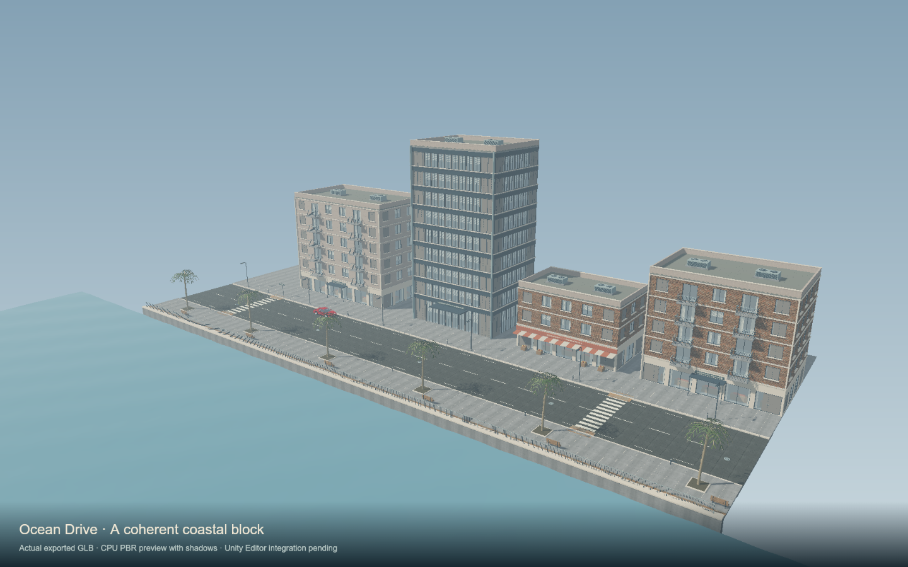
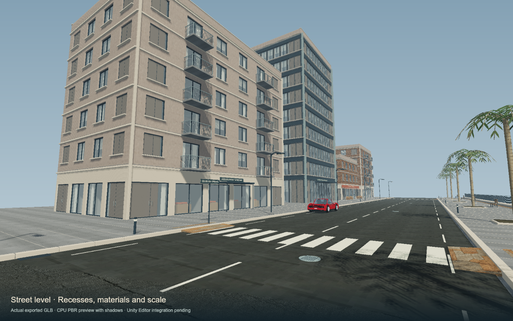
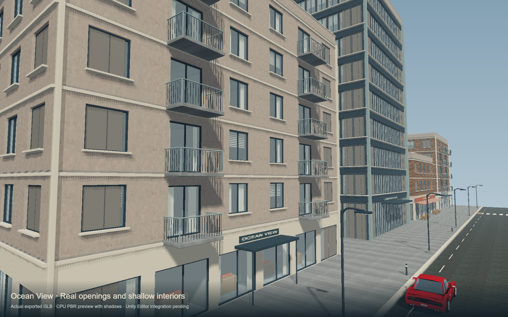
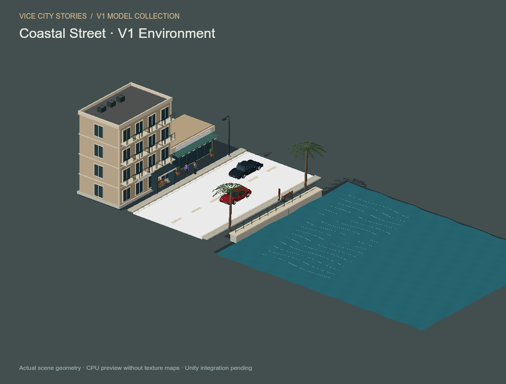

VICE CITY STORIES · RESEARCHED WORLD STUDY 02
A more believable
coastal street.
Four distinct metric buildings, real wall openings, recessed glazing, shallow interior rooms, balconies, roof services, textured road surfaces, drainage and a continuous waterfront. This is a first detailed block for the game, with the original model collection preserved.
4,17,664 scene triangles · 4 building types · 4 reduced-detail variants · 25 primary sources

Actual exported GLB scene, rendered by the CPU preview tool. These images are not Unity Editor screenshots.Designed at street level

Entrances meet the pavement. Window frames sit inside openings. Doors and balconies use coordinated floor levels.
Shared 1K color textures and 512 data maps use physical tile sizes; normal detail adds surface clarity without inflating triangle counts.The modular kit
Unity integration remains pending: the Editor previously failed during startup while allocating shared memory. No playable Unity build, baked GI, APV, runtime LOD switching or laptop frame rate has been verified. Rooms are shallow visual interiors. The city block is fictional, not a surveyed real-world reconstruction.
What the research changed
City-modeling papers informed the street → parcel → building structure. Building and facade papers informed storeys, bays, openings and contextual placement. PBR course notes informed material separation and shared lighting. Unity guides informed the reduced meshes, render chunks and the remaining lighting/performance integration plan.
Before this pass

Earlier V1 geometry preview. It used a different preview renderer, so this is an architecture comparison, not a controlled lighting comparison.World V2: new architecture, surfaces and street infrastructure.